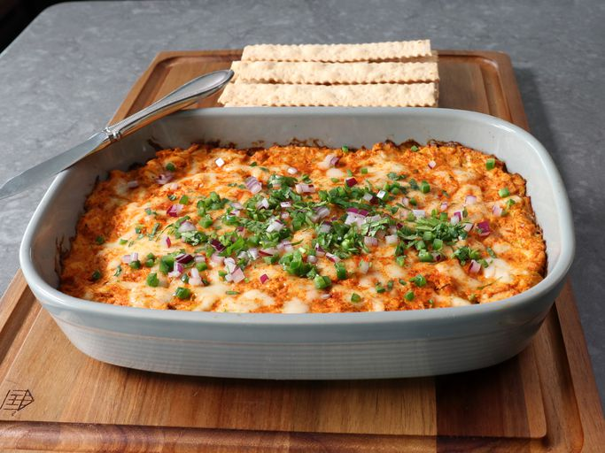

Baked Curry Chicken Dip

Description
This baked chicken curry dip, beautiful, interesting, and flavorful, is curry chicken in dip form. If there's a hungry crowd coming to watch the game, this easy-to-make dip will feed a whole bunch of people with just a little chicken. Serve with crackers, bread, or cut-up naan.
Ingredients
- 1 (8 ounce) package cream cheese, softened
- 1/2 cup plain Greek yogurt
- 1/4 cup tomato paste
- 1 lime, juiced
- 4 cloves garlic, finely minced or crushed
- 2 tablespoons finely sliced cilantro stems
- 1 tablespoon garam masala
- 2 teaspoons smoked paprika
- 2 teaspoons ground cumin
- 1 1/2 teaspoons kosher salt, or to taste
- 1 teaspoon ground coriander
- 1 teaspoon ground turmeric
- 1/2 teaspoon ground ginger
- 1/2 teaspoon freshly ground black pepper
- 1/4 teaspoon cayenne pepper
- 3 cups roughly chopped cooked chicken
- 1/2 cup thinly sliced green onions
- 6 ounces grated mozzarella cheese, divided
Steps
- Preheat the oven to 450 degrees F (230 degrees C).
- Combine cream cheese, Greek yogurt, tomato paste, lime juice, garlic, cilantro stems, salt, pepper, garam masala, smoked paprika, cumin, salt, coriander, turmeric, ginger, black pepper, and cayenne in a bowl. Mix until combined with a spatula.
- Add green onions, 4 ounces mozzarella, and chicken, and use a spatula to fold everything together until combined.
- Transfer into a 2-quart baking dish or deep pie pan, and spread out evenly. Top with remaining mozzarella cheese. Dust top with more cayenne if desired.
- Bake in the preheated oven until curry dip is heated through and cheese on top is melted, about 20 minutes.